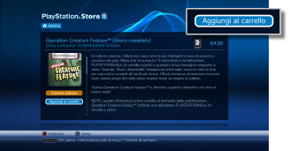
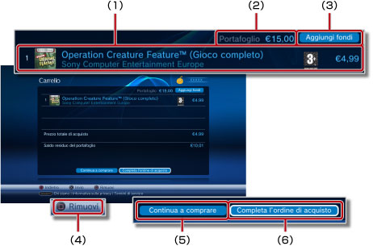
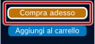
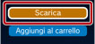
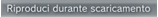

PlayStation®Network > Download (dietro acquisto) dei prodotti
Download (dietro acquisto) dei prodotti
Per utilizzare questa funzione, potrebbe essere richiesto di aggiornare il software di sistema.
È possibile scaricare (dietro acquisto o gratuitamente) prodotti quali ad esempio giochi, elementi aggiuntivi per i giochi o contenuti video disponibili in  (PlayStation®Store). Per scaricare prodotti (a pagamento o gratuitamente) da (PlayStation®Store), è necessario creare un account PlayStation®Network.
(PlayStation®Store). Per scaricare prodotti (a pagamento o gratuitamente) da (PlayStation®Store), è necessario creare un account PlayStation®Network.
1. |
Selezionare |
||||||||||||
|---|---|---|---|---|---|---|---|---|---|---|---|---|---|
2. |
Selezionare l'elemento da scaricare (dietro acquisto o gratuitamente) da |
||||||||||||
3. |
Selezionare [Aggiungi al carrello].  |
||||||||||||
4. |
Selezionare [Visualizza carrello] per visualizzare la seguente schermata. 
|
||||||||||||
5. |
Selezionare [Completa l'ordine di acquisto]. |
||||||||||||
6. |
Selezionare [Conferma acquisto]. |
||||||||||||
7. |
Selezionare l'articolo da scaricare. |
Note
- I prodotti disponibili in (PlayStation®Store) variano in base al paese o alla regione. È possibile accedere solo al punto vendita (PlayStation®Store) del paese o della regione corrispondente all'account PlayStation®Network.
- Per informazioni sui tipi di prodotti che è possibile scaricare (dietro acquisto o gratuitamente) da (PlayStation®Store) e sui servizi post-vendita, visitare il sito Web SCE della propria regione.
- Se si seleziona [Compra adesso] per un articolo da acquistare al punto 3, è possibile saltare la pagina del carrello degli acquisti e procedere direttamente alla schermata di conferma degli acquisti (punto 6). Se i dati della carta di credito sono registrati sull'account PlayStation®Network, i fondi verranno aggiunti automaticamente quando nel portafoglio non vi sono fondi sufficienti per completare l'acquisto.

- Quando si seleziona [Scarica] per un articolo gratuito (punto 3), la pagina del carrello degli acquisti verrà automaticamente saltata per procedere direttamente alla schermata del download (punto 7).

- Se l'ID di accesso (indirizzo di e-mail) non è corretto (o l'indirizzo e-mail non è valido), non sarà possibile ricevere il messaggio di conferma. Utilizzare un indirizzo e-mail valido al quale si desidera ricevere messaggi dopo la registrazione dell'ID di accesso. Per cambiare il proprio ID di accesso, aprire
 (PlayStation®Network) e selezionare quindi
(PlayStation®Network) e selezionare quindi  (Gestione account) >
(Gestione account) >  (Informazioni sull'account) > [ID di accesso (indirizzo di e-mail)]. Seguire le istruzioni sullo schermo per apportare le modifiche.
(Informazioni sull'account) > [ID di accesso (indirizzo di e-mail)]. Seguire le istruzioni sullo schermo per apportare le modifiche. - Alcuni contenuti scaricati (dietro acquisto) da (PlayStation®Store) possono essere utilizzati solo da dispositivi attivati dal sistema PS3™, come un altro sistema PS3™ o un sistema PSP™. Per attivare o disattivare un dispositivo, selezionare (Gestione account) sotto (PlayStation®Network), quindi selezionare
 (Attivazione sistema). Per completare l'operazione, seguire le istruzioni sullo schermo.
(Attivazione sistema). Per completare l'operazione, seguire le istruzioni sullo schermo. - Quando viene visualizzato sullo schermo durante un download, è possibile eseguire contemporaneamente altre operazioni. Selezionare per tornare alla schermata precedente e continuare il download. Per ulteriori informazioni, vedere
 (Rete) >
(Rete) >  (Gestione download) > [Download in background] in questa guida.
(Gestione download) > [Download in background] in questa guida. - Quando durante un download sullo schermo compare

, il video può essere riprodotto mentre viene scaricato. Selezionando , (PlayStation®Store) si chiuderà e inizierà la riproduzione del video.